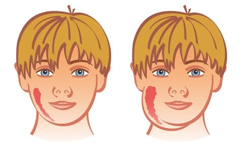

Это редкое заболевание недавно охватило Соединенные Штаты: в 2007 году было отмечено около 5000 случаев. До этого свинка считалась довольно нераспространенной, каждый год регистрировалось только 250 случаев. Хотя ваш ребенок, скорее всего, не заболеет свинкой, вот наши советы, как распознать ее.
СИМПТОМЫ
Лихорадка и ангина — первые симптомы, как и у многих других заболеваний. Уникальный признак свинки — увеличение околоушных слюнных желез (слюнные железы с внутренней стороны щек непосредственно перед ушами). Железы становятся болезненными, и жевание может доставлять дискомфорт. Инкубационный период — 16—18 дней. Человек становится источником инфекции примерно за 2 дня до того, как увеличатся железы, и примерно еще 5 дней после.

КОГДА БЕСПОКОИТЬСЯ И ЧТО ДЕЛАТЬ
Специфического лечения от свинки нет. Самое главное, что нужно сделать, — распознать типичное увеличение желез и затем изолировать ребенка. Позвоните врачу и узнайте о возможности визита к нему. Есть несколько осложнений, о которых необходимо знать.
Орхит (увеличение и боль в яичках). Это заболевание часто встречается у мужчин, которые заболевают свинкой после периода полового созревания, и, как правило, безобидно. Бесплодие — крайне редкое последствие орхита. Не существует лечения или вмешательства, которое могло бы повлиять на исход.
Менингит. Свинка может вызвать симптомы менингита. При подозрении на менингит обратитесь в отделение неотложной помощи.
Здоровье ребенка от докторов Сирс / Сирс У. и др.